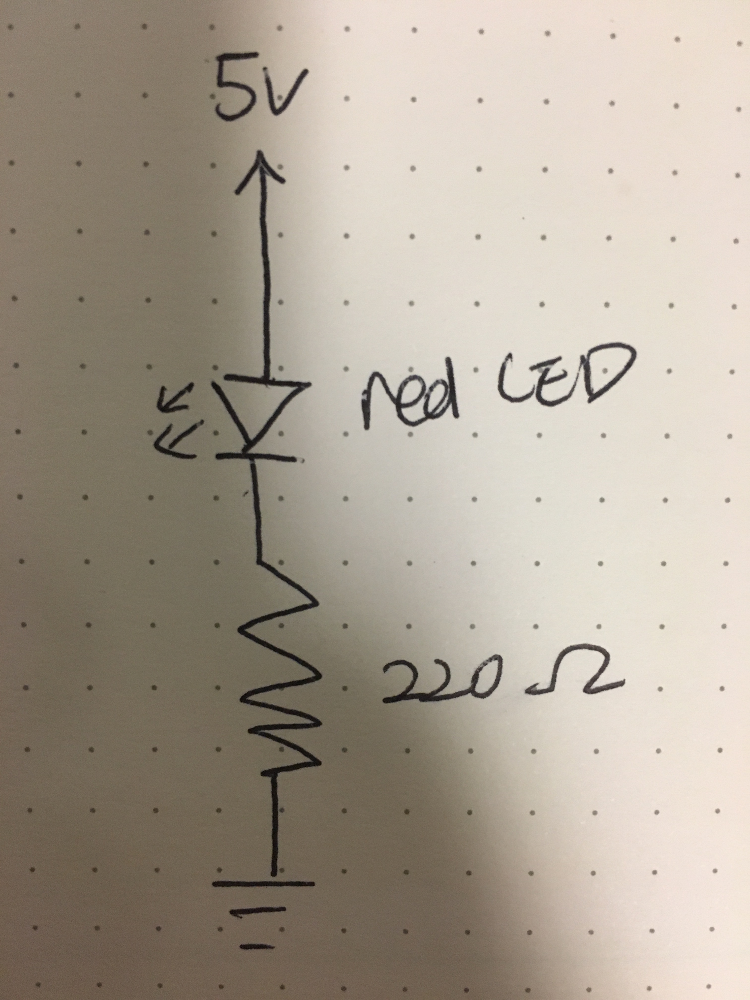

Eighth assignment
Circuit


To create this circuit with a red LED and resistor, I soldered wires on the perf board to connenct red LED and resistor. It is necessary to know how to use soldering method and perf board just in case your breadboard doesn't fit inside your product.
Schematic & Calculation

I chose 220Ω for the resistors for my LEDs because I needed to find the optimal resistor to prevent broken LEDs. The reasoning is -- the red LED has 1.8 V drop. Current is 20 mA. Voltage from Arduino is 5V. Using Ohm’s law(V = I x R), the circulation to find R is:5V - 1.8V = 3.2 V = 0.02 (20mA) x R. R is 160Ω. And the resistors nearest value to 160Ω were 220Ω.
Circuit's operation

When 5V is connected, the LED turns on. If not, it turns off.